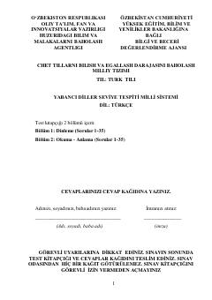

TTTurk tili bo'yicha tinglab va o'qib tushunish ko'nikmalarini baholash uchun testlar to'plami.
Ushbu kitob turk tilini bilish darajasini baholash uchun mo'ljallangan test materiallarini o'z ichiga oladi. Qo'llanma tinglab tushunish va o'qib tushunish ko'nikmalarini tekshirishga qaratilgan turli darajadagi topshiriqlardan iborat.